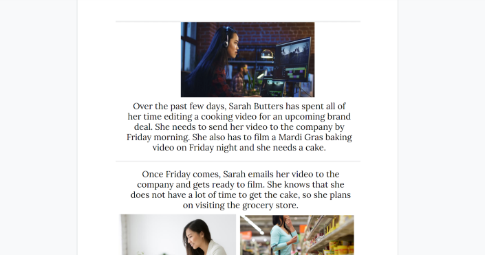
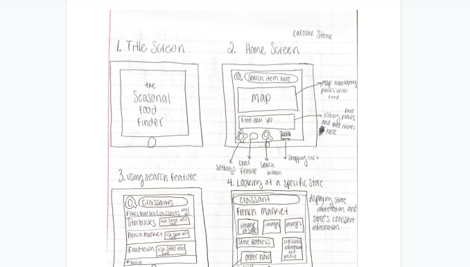
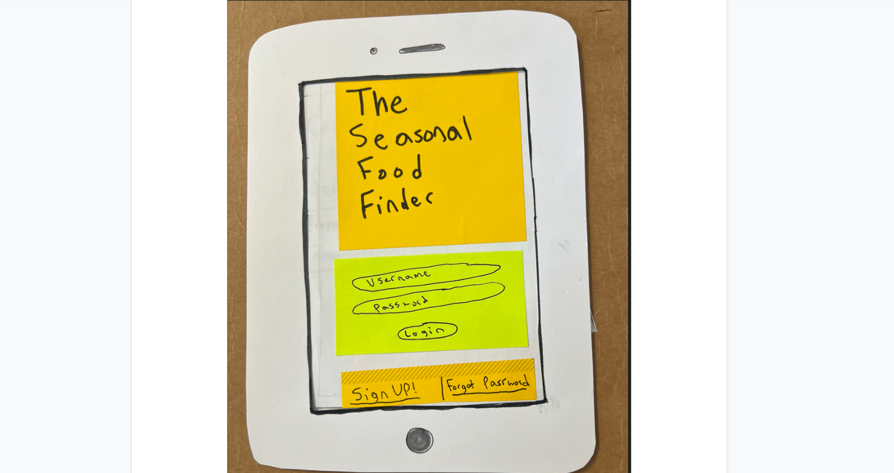
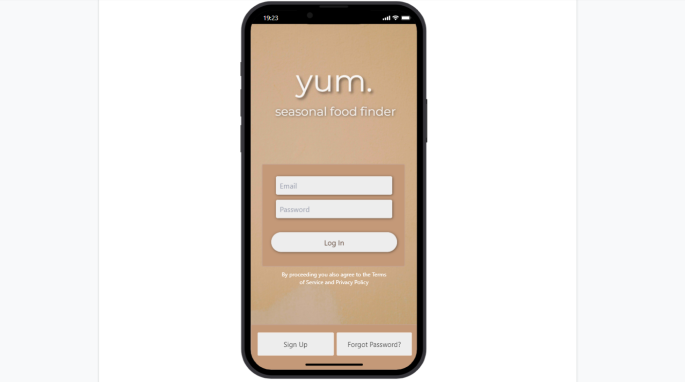

Problem Statement: Seasonal Food Finder

During certain times of the year, it is difficult to find specific food items in stores or restaurants. For example, it is challenging to find pumpkin bread outside of the fall season because many stores do not have it. Our solution will provide users a guide to locating their favorite consumables no matter the season.
Affinity Diagram: Seasonal Food Finder

Our team thought about the details and questions surrounding our seasonal food application. We were brainstorming ideas on the layout of the app and how we wanted to reach out to small businesses. Additionally, we thought about how the application could be used to share product information and recipes with friends.
Personas: Five Personas for the Users of the Seasonal Food Finder

We have created five personas that could represent the users of the Seasonal Food Finder.
Storyboards: Five Stories Involving Our App
Our storyboards display situations where our app could be useful for the personas we created.
Sketches: Drawings of Our App
Rough drawings of the layout of our app.
Paper Prototype: Paper Model of Our App
A paper guide of our app's functions and screen layouts.
Hi-Fi Prototype: Digital Model of Our App
A high fidelity prototype that shows our app in a digital format. This prototype displays our app as if it were on a phone. Many of the app's features are brought to life because the prototype is interactive.